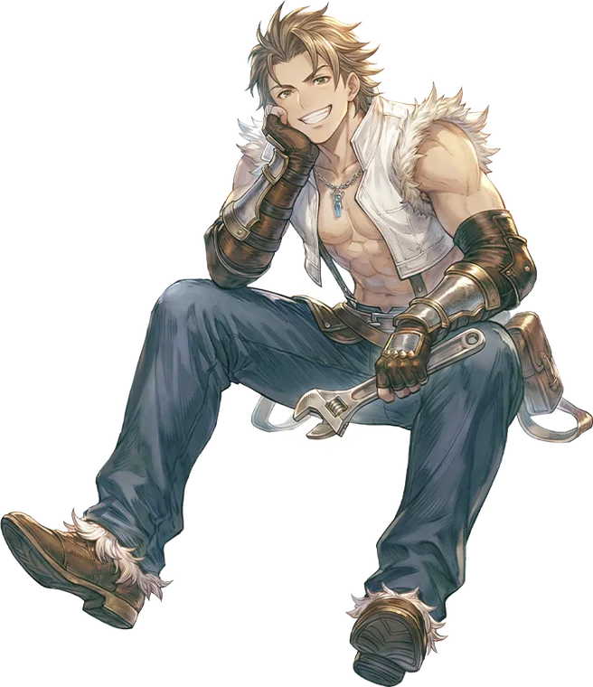

Third tier
Mastersmith
Mastersmith is the primary advancement option for the Blacksmith. It very much continues in the same vein as the Blacksmith before it: build lots of damage and hope the enemy dies before you do, relying almost entirely on gear to build up the survivability needed to make your way through each encounter while your skills deal the maximum damage possible, making those encounters as short as possible.
The Mastersmith tree builds out in the same way as the Blacksmith tree. There is a branch focused on autoattacks, a branch focused on building and spending Extort, and a branch focused on item crafting.
The autoattack branch provides a number of short-term buffs to give a large boost to your attacks. These have nothing close to full uptime, so you will need to wait patiently for the opportunity to utilize them to their maximum effect.
The Extort branch gains three skills of ascending Cooldown - a short CD to replace the use of the Extort skill in your primary combo, a medium CD to add a large spike of damage and grant access to the Vulnerable status, and a very long CD to expend accumulated Extort stacks for massive damage.
The crafting branch allows the Mastersmith to create permanent Weapon and Armor mods. These can be used by any class, replacing the Random Options they generated with more focused bonuses. While the bonuses offered by these modifiers affect all classes, they have enhanced effects for Mastersmiths who have the Weapon and Armor Modification skills.

Where it sits
Skill list
Skills
Grouped the way the tree is grouped. Names, types, targets and the numbers behind every level come from the player wiki, so they match what you see in game.
Autoattack Skills3 skills
-
MeltdownSupportiveSelfLv 10
Boosts Burning damage; active window converts attacks to half Burning Damage.
The user superheats their weapon, passively increasing their Burning Damage and giving their Whirling Axe procs a chance to inflict the Severe Burning status. When activated, autoattacks and Whirling Axe procs will be treated as Burning damage for a short duration.
Works withWhirling Axe
Level by level
Level Burning Damage Bonus Severe Burning Chance SP Cost 1 3% 10% 23 2 6% 20% 26 3 9% 30% 29 4 12% 40% 32 5 15% 50% 35 6 18% 60% 38 7 21% 70% 41 8 24% 80% 44 9 27% 90% 47 10 30% 100% 50 -
Whirling AxeSupportiveSelfLv 10
Autoattacks gain a chance to splash in a 5x5 area.
The user adopts a wild, whirling fighting style, passively giving their attacks a chance to splash in a 5x5 area around them. This splash will also deal additional damage to the original target of the attack. When activated, the trigger chance is massively increased for a short duration.
Level by level
Level Passive Splash Chance Active Splash Chance SP Cost 1 2% 6% 23 2 4% 12% 26 3 6% 18% 29 4 8% 24% 32 5 10% 30% 35 6 12% 36% 38 7 14% 42% 41 8 16% 48% 44 9 18% 54% 47 10 20% 60% 50 -
BerserkSupportiveSelfLv 10
Massive ASPD and damage reduction
The user enters a battle frenzy, gaining massive Damage Reduction, Attack, and ASPD for the duration. While active, the user cannot use any skills or consumables. When the Frenzy status ends, the user's HP is reduced to 10% of their maximum, and their SP is reduced to zero. Triggering this skill automatically activates Meltdown and Whirling Axe at their learned levels, extends their duration to 10 seconds, and increases the user's ASPD cap to 190.
Works withWhirling AxeMeltdown
Learn firstMeltdown Lv5, Whirling Axe Lv5
Level by level
Level Cooldown 1 114s 2 108s 3 102s 4 96s 5 90s 6 84s 7 78s 8 72s 9 66s 10 60s
Extort Skills3 skills
-
OverwhelmPhysicalEnemyLv 10
Short-cooldown slam that generates Extort.
Slams into the enemy with tremendous force, generating a stack of Extort. If the enemy is Stunned or Staggered, they take additional damage.
Level by level
Level Damage SP Cost 1 375% 26 2 400% 27 3 425% 28 4 450% 29 5 475% 30 6 500% 31 7 525% 32 8 550% 33 9 575% 34 10 600% 35 -
CleavePhysicalEnemyLv 10
Strips defensive statuses and inflicts Vulnerable.
Delivers a sundering blow to the enemy, shredding any protective abilities. Strips most defensive abilities from the target, then deals heavy physical damage that is increased if the target is Vulnerable. If the target is not Vulnerable, has a chance to inflict the Vulnerable status instead.
Level by level
Level Damage Vulnerable Chance SP Cost 1 320% 55% 21 2 340% 60% 22 3 360% 65% 23 4 380% 70% 24 5 400% 75% 25 6 420% 80% 26 7 440% 85% 27 8 460% 90% 28 9 480% 95% 29 10 500% 100% 30 -
Power SwingPhysicalEnemyLv 10
Consumes all Extort for massive damage and escalating effects.
Slams the user's weapon into the head of the enemy, dealing massive damage based on the user's Extort stacks. Gains bonus effects cumulatively based on the number of Extort stacks consumed. If the user has no Extort stacks, the skill will miss.
Inflicts Vulnerable for 5 Seconds
Refreshes the Cooldown of Overwhelm
Inflicts Stun for 2 Seconds
Refreshes the Cooldown of Cleave
Splashes in a 5x5 Area
Learn firstOverwhelm Lv5, Cleave Lv5
Level by level
Level Damage SP Cost 1 430% 52 2 460% 54 3 490% 56 4 520% 58 5 550% 60 6 580% 62 7 610% 64 8 640% 66 9 670% 68 10 700% 70
Crafting Skills3 skills
-
Equipment ModificationPassiveLv 10
Improves the user's Weapon and Armor Modifications.
Increases the efficiency of Weapon and Armor Mods on the user's equipment. This only affects mods used by the owner of this skill. It does not influence the strength of mods crafted by the user but used by other players.
-
Weapon ModificationCraftingLv 10
Crafts devices that replace weapon Random Options with focused bonuses.
Combines materials to create a Weapon Modification Device. The device can be used to replace the Random Options on any weapon. The level of this skill learned improves the efficiency of those mods for the user, but does not influence the success rate of crafting or the strength of the rolls received.
Learn firstEquipment Modification Lv1
-
Armor ModificationCraftingLv 10
Crafts devices that replace armor Random Options with focused bonuses.
Combines materials to create an Armor Modification Device. The device can be used to replace the Random Options on any Armor (not garments or shoes). The level of this skill learned improves the efficiency of those mods for the user, but does not influence the success rate of crafting or the strength of the rolls received.
Learn firstEquipment Modification Lv1
From the players
See it played
Come find out what changed
Make an account, grab the client, and come and see what changed.